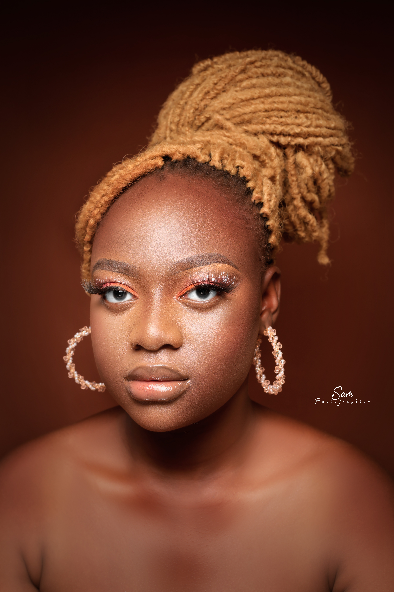
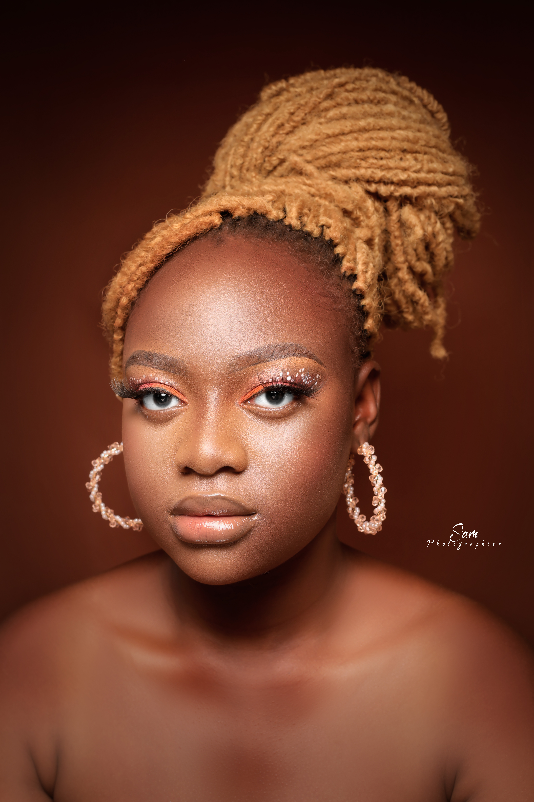

Diplômée de la faculté des sciences économique et de gestion, j’ai une licence en économie et gestion des entreprises et des organisations.
Passionnée, créative et dynamique j’ai un bon sens du relationnel que je saurai mettre au service de votre entreprise.

Licence en économie et gestion des entreprises et des organisations à l'Université Saint Thomas d'Aquin [2019-2022]
Master en comptabilité et gestion financière, en cours [depuis 2023]
Formation en entrepreneuriat feminin [Juillet 2022]
Formation en sage comptabilité et états financiers [Avril 2023]
Formation en anglais [Janvier 2023]
Formation en informatique, SAS Hackeuse [Jui 2023-Août 2023]
Stagiaire en marchés publics à la LONAB [Sept 2020-Oct 2020]
Chargée des projets et des relations extérieures de l'association des femmes entrepreneures
Français: Très bien
Moore: Bien
Anglais Assez bien
WhatsApp:
Facebook
Instagram:
Tik Tok:
Linkedin:
Snapchat:
Twiter:
Vie sociale et privée
 
